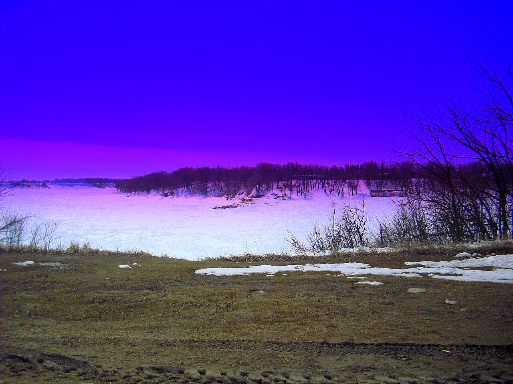
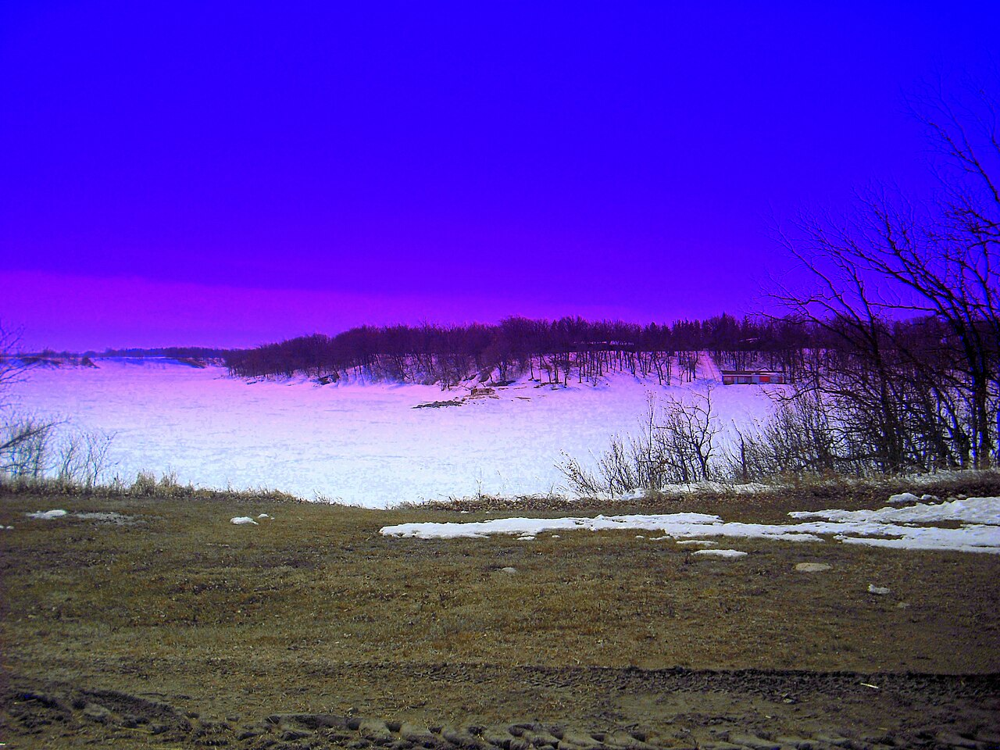
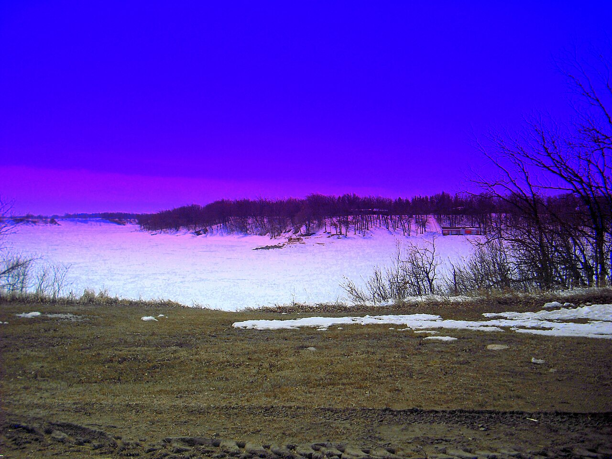

High Swelling Sodium Bentonite
Korvanto Bentonite
Korvanto Bento Pond Seal
Bentonite for Pond Sealing, Water Retention & Seepage Control

Export ReadyOverview
Product Overview
KORVANTO BENTO SEAL is a premium-grade natural sodium bentonite specially developed for pond sealing, water containment, and seepage control applications. Owing to its exceptional swelling and water absorption properties, the bentonite expands upon hydration to form a dense, low-permeability barrier that effectively minimizes water loss through soil.
When mixed with suitable soils, KORVANTO BENTO SEAL creates a durable and self-healing seal that helps retain water in ponds, reservoirs, lagoons, canals, and other water containment structures. Its natural rehydration and re-swelling characteristics enable long-term performance, making it an economical and environmentally friendly alternative to synthetic liners.
Suitable for both new construction and leak remediation projects, KORVANTO BENTO SEAL provides reliable water retention while preserving the natural characteristics of the site.
Performance
Key Benefits
Excellent Water Absorption Capacity
Very Low Permeability Characteristics
Natural Self-Sealing Properties
Rehydration and Re-Swelling Capability
Effective Soil Dispersion Performance
Natural and Chemical-Free Material
Long-Term Water Retention Performance
Suitable for Various Soil Conditions
Available in Powder and Granular Forms
Technical Data
Typical Specs
KORVANTO BENTO SEAL-P — Pond Sealant Powder Grade
| Parameter | Typical Value |
|---|---|
| Water Content | 13% |
| Specific Gravity | 1.0 – 1.20 gm/cc |
| CEC | 70 – 75 meq/100 gm |
| Expandability | 15 – 20 ml min |
| Water Absorption Capacity | 250 – 350% (±50) |
| Montmorillonite Content | Min. 80% |
| Particle Size (>200 BSS Mesh) | 70% |
KORVANTO BENTO SEAL-G — Pond Sealant Granular Grade
| Parameter | Typical Value |
|---|---|
| Water Content | 13% |
| Specific Gravity | 1.0 – 1.20 gm/cc |
| Granulation | 0 – 5 mm |
| CEC | 70 – 75 meq/100 gm |
| Expandability | 15 – 20 ml min |
| Water Absorption Capacity | 250 – 350% (±50) |
| Montmorillonite Content | Min. 80% |
Custom pond sealant bentonite grades can be supplied based on swelling requirements, permeability specifications, particle size distribution, and project-specific performance requirements.
Industry Use
Applications
Grades
Available Grades

Pond Sealant Powder Grade

Pond Sealant Granular Grade
Export Supply
Packing Options
Get Started
Request TDS / Request Quote
Share your grade requirements, destination country and documentation needs. Our export team will provide a Technical Data Sheet, certificate support and a tailored quotation for Korvanto Bento Pond Seal.